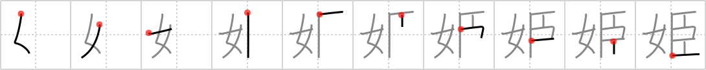

姫
← →
princess

Reading:
On-Yomi: キ — Kun-Yomi: ひめ、ひめ-
Heisig story:
Woman . . . slave.
Koohii stories:
1) [fuaburisu] 10-10-2005(223): Princess Leia becomes Jabba's slave (“princess Leia is a woman slave”).
2) [mhaellix] 28-9-2007(106): Cinderella: A woman who was a slave who became a princess.
3) [akotkav] 4-4-2006(38): Ancient princesses were simply women with loyal slaves standing by them.
4) [raseru] 2-4-2008(10): A princess is a women who is a slave to manners.
5) [Cygnus] 15-3-2008(6): Ever seen Revolutionary Girl Utena? In the story, a girl named Himemiya Anshī ( 姫宮 アンシー) is a coveted princess bride by title, but she is little more than a woman-slave, who is passed around from master to master as the prize of a dueling game. And look at her name: this character for "princess" is the first of the kanji in it.